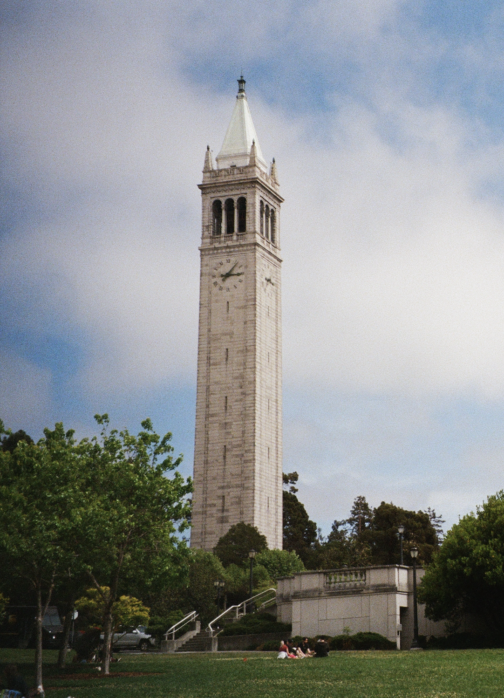

Half Dome
Yosemite National Park, CA
Nov 2021
Interaction tips:
- Click on the dropdown menu below the graph to filter out the line for “Worldwide” (and zoom in on country-level data)
- Click on the specific countries in the legend on the right to highlight that country in the visualization. To deselect a country, click outside of the legend.

Redwood Creek
Redwood National Park, CA
Jul 2021
Interaction tips:
- Click on the chart filter below the map on the left to compare the selected year’s CO2 emissions with 2019’s CO2 emissions (on the right).

Stanislaus River
Stanislaus National Forest, CA
Jun 2021
Interaction tips:
- Adjust the slider on the top to compare any time period (represented in yellow) with the current time period from 2014-2020 (represented in blue).
- Note the darker yellow and blue lines in the chart. These represent the average monthly rainfall within the selected years.

Lower Cathedral Lake & Cathedral Peak
Yosemite National Park, CA
Jul 2021
Interaction tips:
- Mouseover counties to identify the county name, and the percent of the county in extreme (D3) or exceptional (D4) drought.
- Scroll right to see more recent years.

Palisades Ski Area
Tahoe National Forest, CA
Mar 2021
Interaction tips:
- Mouseover each dot to get details on the corresponding year, temperature, and precipitation.
- Filter by time period by clicking and dragging the slider below the main chart.
- Warning: unlike most scatterplots, time is not on the X-axis — that’s the temperature. Instead, each dot is colored according to its decade.
Fun Fact: You may wonder how so many big fires burned in 2021 when it had such a wet summer. In reality, the summer wasn’t wet. The state only averaged 0.99 inches of rain before an “atmospheric river” dumped over 3.5 inches on the state in the last 10 days of October.
Data: Cal Fire Data: NOAA
Top of Yosemite Falls
Yosemite National Park, CA
Nov 2021
Interaction tips:
- Press “Play” in the top left corner or use the slider to see every fire in the last 8 years.
- Mouseover any fire you’re interested in to get details on the acres burned, the day of fire ignition, and the county.

Lembert Dome, Tuolumne Meadows
Yosemite National Park, CA
Jul 2021
Interaction tips:
- Mouseover anywhere on the graph you’re interested in to get details on emissions in California.
- Mouseover the red line to see the start year of the cap-and-trade program. Data: California Air Resources Board

Memorial Glade, UC Berkeley
Berkeley, CA
May 2021